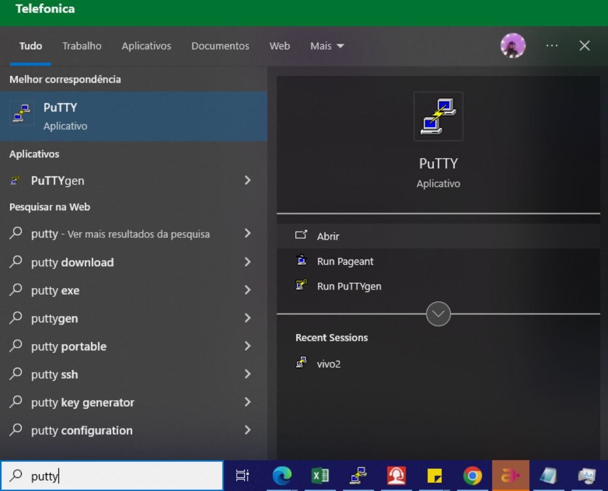
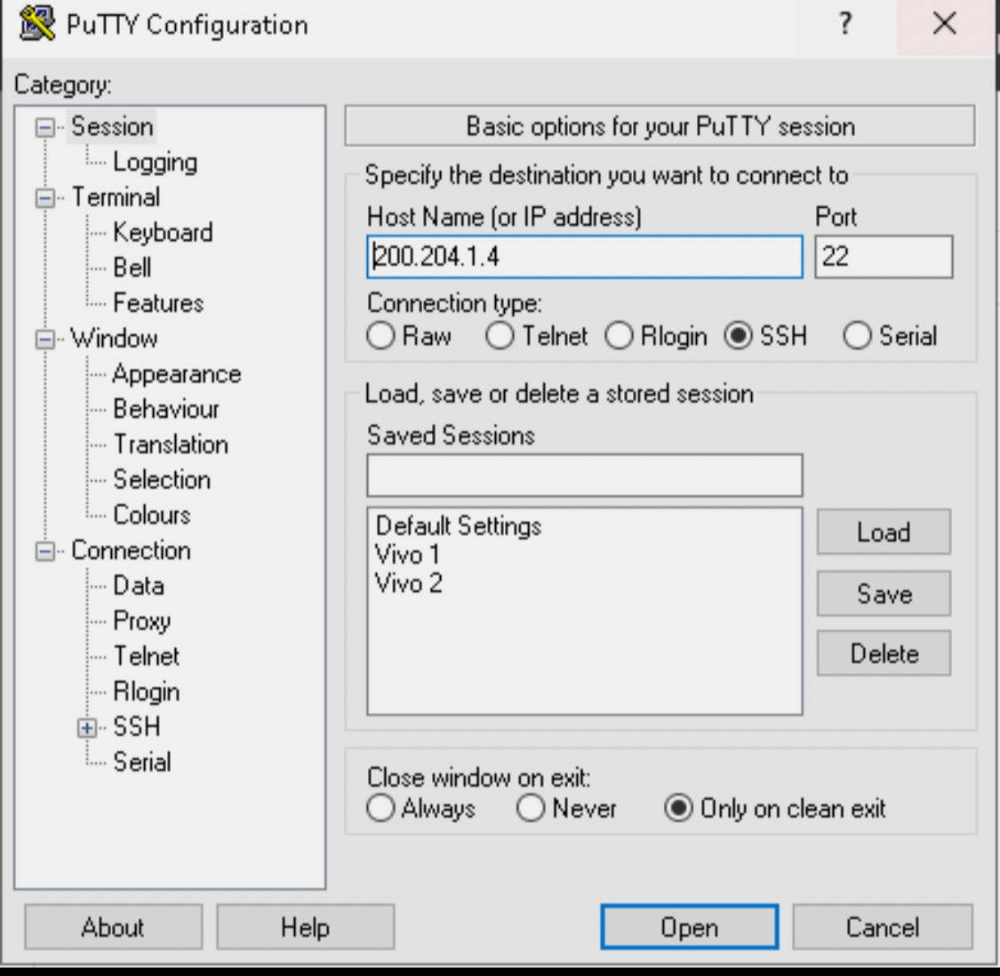
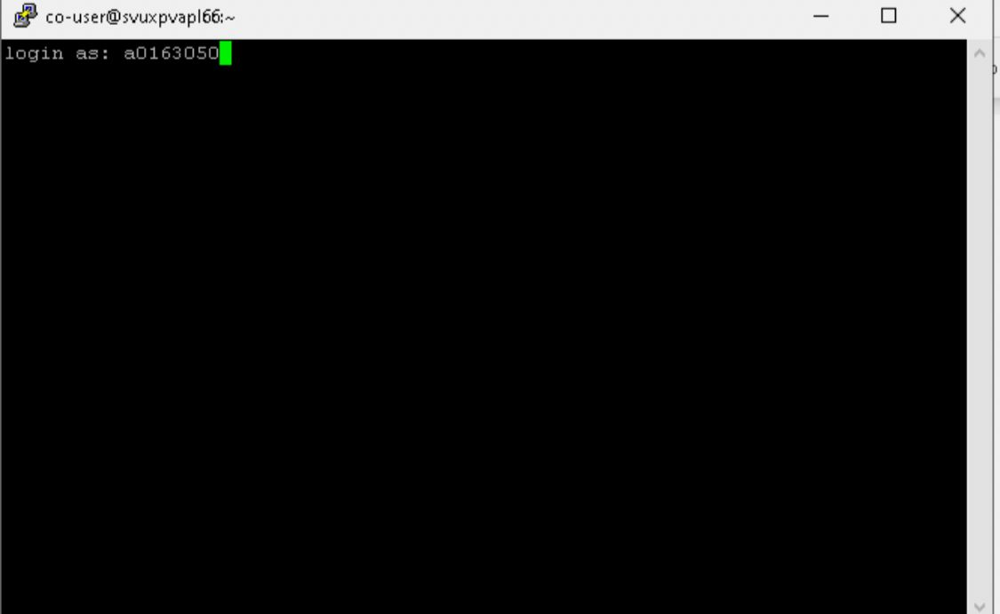
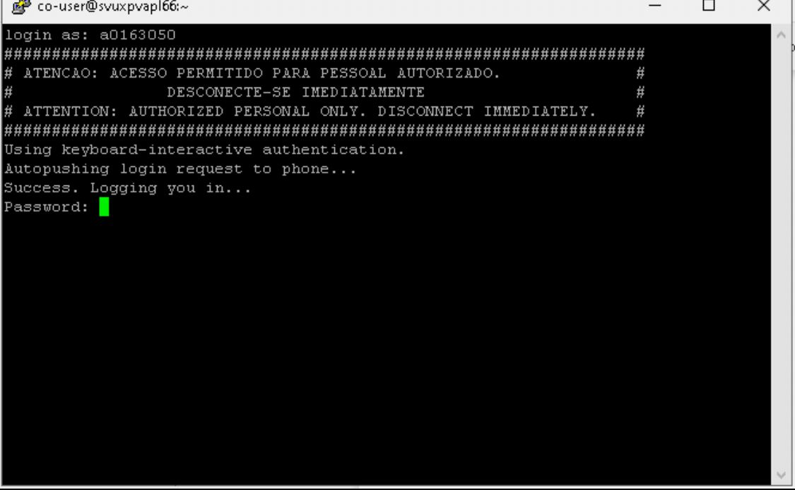

Primeiramente para acessar o Putty você deve clicar na barra de pesquisa na barra de tarefas do Windows,e então digite o nome do programa (PUTTY) e clique no ícone

Irá abrir a tela inicial do Putty, digite o IP 200.204.1.4 que corresponde a Vivo 1 na aba "Host Name (Or IP Adress), e então clique em "Open"

Assim que abrir a tela preta, digite sua matrícula com a letra "a" sempre minúscula e aperte ENTER.

Assim que apretar a tecla ENTER, o programa fará o seu login, então quando estiver na tela que está ao lado, digite sua senha de rede.